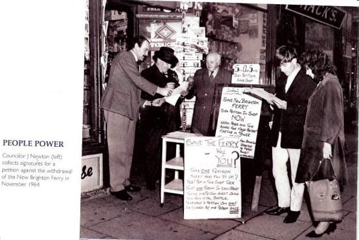

The origins and ideas for a community centre go back to 1973 when local stalwarts Mrs Beryl Lloyd, Joe Newton and Jenny Merrill got together and formed the New Brighton Community Group. All three were not only instrumental in its foundation but were also leading lights in the local community themselves.
Mrs Beryl Lloyd: In 1974 at the formation of the then New Brighton Community Group when there was no money, no place to meet, yet under the inspiration of Mrs Lloyd the group kept together at meetings and the same lady persuaded the pastor of St Andrews (the old Methodist Church Hall) to let us meet in a church room - were each member paid 10p to hold the meeting. From these humble steps the group strived forward to meeting at what is now the dental practice on the corner of Victoria Road before moving in to its present headquarters in Hope Street in 1981 which was the old Police station. Through all those early struggles Mrs Lloyd was a constant inspiration.
Mr Joe Newton: Joe was a genial character well known in the New Brighton area were he and his wife ran a newsagents shop in Victoria Road. It was famous for its old postcards of the resort and situated next door to Mac's the shoe shop. Joe a former Policeman was also involved for many years in the old Wallasey Ratepayers Association which and I quote from a 1962 newsletter which promoted:
Joe eventually successfully stood for the Ratepayers Association becoming a councillor for in the area in the early 60s. His involvement and experience in the area was later to be put to such great effect with the formation of the New Brighton Community Association in the 70s. Joe will always be remembered for his expertise in guiding the Community Association through that difficult early period.

Mrs Jenny Merrill: Jenny served with distinction as the Treasurer for a grand 22 years in all, her common sense and cautious approach with the finances enabled the Association to achieve a degree of stability under her stewardship. Jenny's other community commitments included being the treasurer of the Wirral Play Council and running the Youth & Brownie groups at the Emmanuel Church Hall on nearby Seabank Road.